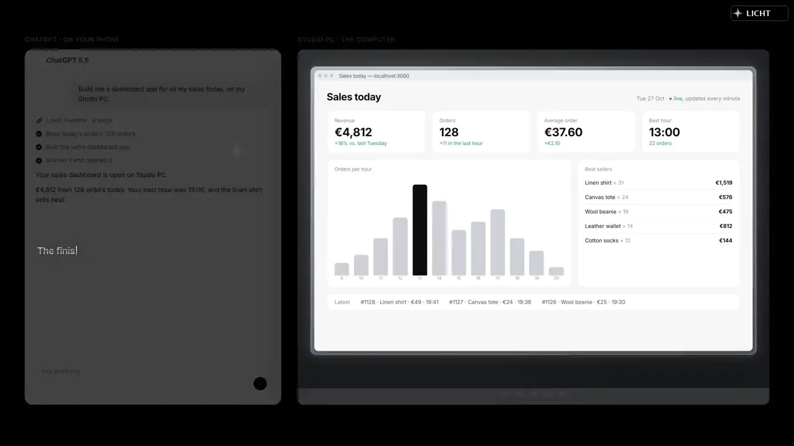
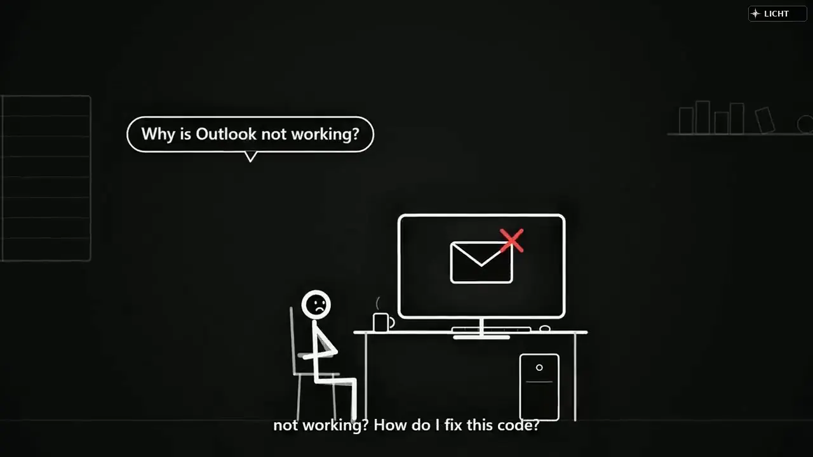
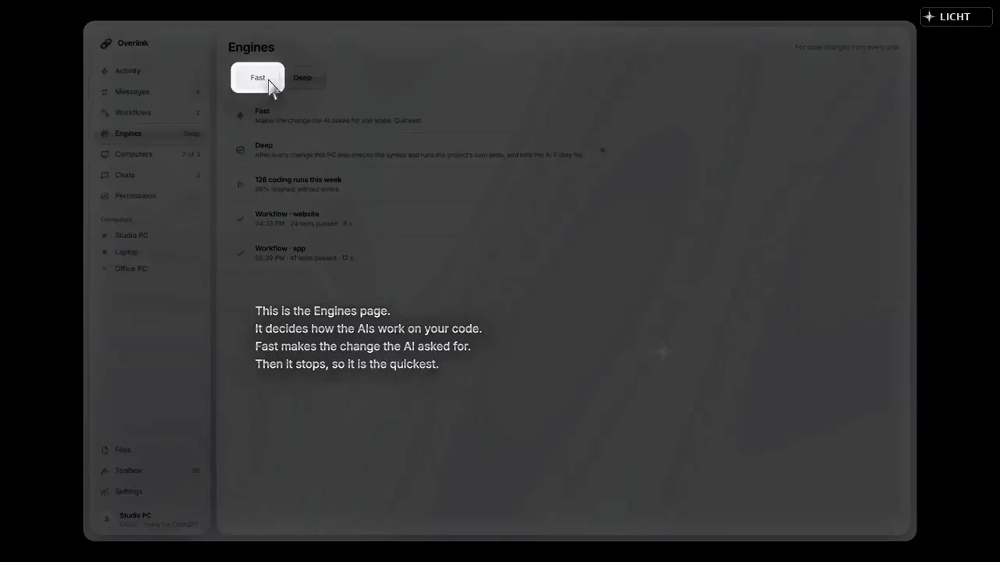

Desktop agent
Overlink
Lets ChatGPT and other AI apps work on your own Windows PC. You decide what they may do.
Source codeYour AIChatGPT, Claude Desktop and Claude Code
Your PCFiles, terminal and browser
Your callYou approve what it may do
What it is
Overlink connects an AI conversation to authorized tools on paired Windows computers.
What it does
- Inspect paired devices and execution results.
- Run authorized file, terminal, and browser actions.
- Transfer context and work across connected computers.
- Display permissions and task state.
How it works
A ChatGPT session uses an authenticated MCP relay to select a paired computer and request actions. The local device controller runs permitted file, browser or terminal operations and returns the result to chat. Permissions, device status and visible outcomes are part of the workflow.


